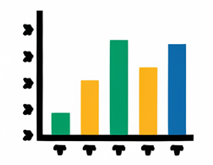
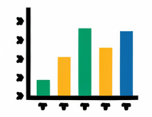

Ciencia de Datos
Modelos de detección de anomalías y fraude en operaciones crediticias
- Aplicación de algoritmos supervisados y no supervisados de Machine Learning (ML) y Deep Learning (DL) para detectar anomalías y posible fraude en transacciones vinculadas con operaciones de tarjeta de crédito y débito.
- Desarrollo de modelos de clasificación y detección de patrones inusuales que permiten identificar actividades sospechosas en tiempo real.
Modelos de prevención de fraude para empresas aseguradoras
- Aplicación de algoritmos supervisados y no supervisados de Machine Learning (ML) y Deep Learning (DL) para detectar posible fraude en demandas de indemnización.
- Implementación de modelos predictivos para identificar patrones sospechosos en los reclamos, utilizando técnicas como el análisis de redes neuronales, árboles de decisión, random forests y clustering.
Modelos de customer churn para empresas financieras, comerciales y aseguradoras
- Aplicación de algoritmos de Machine Learning (ML) para predecir la rotación de clientes (customer churn) en empresas del sector comercial, financiero y asegurador.
- Identificación de patrones de comportamiento que anticipan la desvinculación de clientes, utilizando modelos predictivos como regresión logística, árboles de decisión y redes neuronales.
- Segmentación de clientes con mayor probabilidad de abandono para la implementación de estrategias de retención personalizadas.
Soluciones RAG para empresas
- Implementación de soluciones RAG (Retrieval-Augmented Generation) para interactuar con bases de datos y documentos no estructurados en empresas financieras y aseguradoras.
- Utilización de modelos de procesamiento de lenguaje natural (NLP) para obtener respuestas precisas y contextualizadas, mejorando la eficiencia en la búsqueda y el análisis de información clave.
Dashboards para visualización de procesos
- Creación de dashboards y tableros interactivos para una visualización clara y eficiente de procesos y registro de actividades en empresas financieras y aseguradoras.
- Integración de métricas clave y KPIs en tiempo real, permitiendo a los usuarios monitorear el rendimiento y la eficiencia operativa de manera rápida y precisa.
- Personalización de los tableros según las necesidades específicas del negocio, facilitando la identificación de áreas de mejora y la toma de decisiones informadas.
Scraping de datos e información en la web
- Extracción de información relevante de internet mediante técnicas de web scraping, enfocadas en precios de alimentos, bebidas, activos financieros, cotizaciones de mercado, pólizas de seguro, entre otros.
- Automatización del proceso de recopilación de datos desde múltiples fuentes en línea, permitiendo la obtención de información actualizada en tiempo real.
Chatbots orientados a la atención al cliente
- Elaboración e implementación de chatbots mediante técnicas de Procesamiento de Lenguaje Natural (NLP) para facilitar y automatizar la atención al cliente.
- Desarrollo de chatbots capaces de gestionar consultas frecuentes, proporcionando respuestas rápidas y precisas para mejorar la experiencia del usuario.
- Automatización de la interacción con clientes, optimizando los tiempos de respuesta y reduciendo la necesidad de intervención humana en procesos rutinarios.
Algoritmos de clusterización para segmentación de clientes
- Aplicación de algoritmos de clustering no supervisados para segmentar y agrupar clientes, con el objetivo de identificar patrones de comportamiento y optimizar estrategias comerciales. maximizando el valor de vida del cliente (Customer Lifetime Value, CLV).
- Optimización de campañas de marketing y estrategias de fidelización mediante la agrupación eficiente de clientes en segmentos que comparten comportamientos similares, lo que aumenta la tasa de retención y la satisfacción del cliente.
Modelos de Credit Scoring para empresas del sector financiero
- Mejora de la gestión del portafolio de créditos, permitiendo a la empresa seleccionar a los clientes adecuados y diversificar el riesgo. Una cartera de clientes diversificada entre diferentes niveles de riesgo reduce las probabilidades de pérdidas significativas por impagos.
- Automatización de decisiones. Evaluación oportuna y eficiente para aprobar o rechazar solicitudes de crédito.
- Optimización de la cartera de clientes. El credit scoring ayuda a mejorar la gestión del portafolio de créditos, permitiendo a la empresa seleccionar a los clientes adecuados y diversificar el riesgo.
Sistemas de recomendación para empresas de retail
- Incremento en ventas y conversiones. Sugerencia de productos relevantes basados en el comportamiento previo de los usuarios para aumentar la probabilidad de compras adicionales.
- Personalización de la experiencia del cliente. Personalización de la experiencia de compra al sugerir productos que coinciden con las preferencias, intereses y comportamientos previos de los clientes.

 (3).png) 

 (1).png)